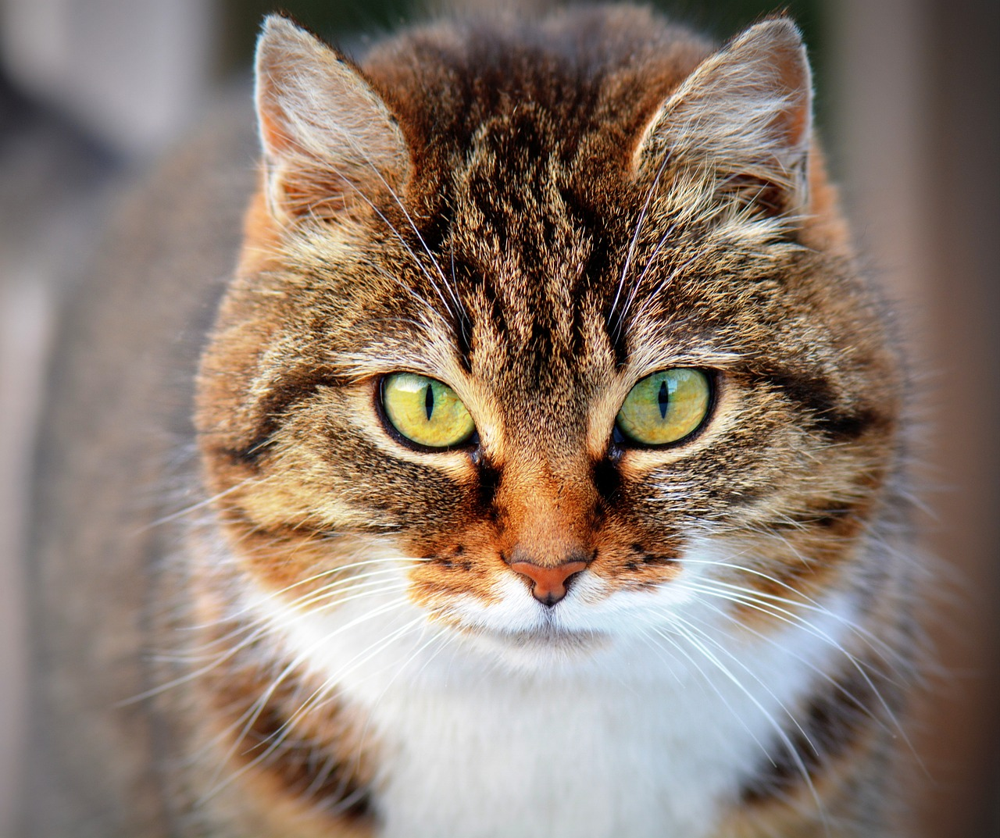

la vida de Dony
Dony era un gato muy mimado que vivía en una casa grande y lujosa con su dueña, una señora mayor que le adoraba. Dony tenía todo lo que podía desear: comida, juguetes, camas, rascadores y mucho cariño. Sin embargo, Dony se aburría mucho en la casa y sentía curiosidad por el mundo exterior. Un día, aprovechó que la señora salió a hacer unas compras y se escapó por la ventana. Se encontró con un mundo muy diferente al que conocía: coches, ruidos, gente, perros y otros gatos. Al principio, le pareció muy divertido y se puso a explorar todo lo que veía
Pero pronto se dio cuenta de que no todo era tan bonito como pensaba. Se metió en problemas con unos gatos callejeros que le persiguieron y le arañaron. Se perdió entre las calles y no supo cómo volver a su casa. Se asustó con los ruidos y los coches que pasaban cerca de él. Se sintió solo y triste, sin nadie que le cuidara. Entonces, se acordó de su dueña y de lo mucho que le quería. Se arrepintió de haberse escapado y deseó volver a su hogar. Por suerte, un niño que pasaba por allí lo vio y lo reconoció por el collar que llevaba. El niño sabía dónde vivía la señora y decidió llevarlo de vuelta a su casa. Dony se alegró mucho de ver al niño y le agradeció con un ronroneo.

El niño lo llevó en brazos hasta la casa de la señora y tocó el timbre. La señora abrió la puerta y se sorprendió al ver a su gato. Se puso muy contenta y le dio un abrazo al niño y a Dony. Le dio las gracias al niño por haberle devuelto a su gato y le invitó a pasar a tomar algo. El niño aceptó y entró en la casa con Dony. Dony se sintió muy feliz de haber vuelto a su hogar y de haber conocido a un nuevo amigo. Desde entonces, Dony nunca más quiso escaparse de su casa y aprendió a valorar lo que tenía.